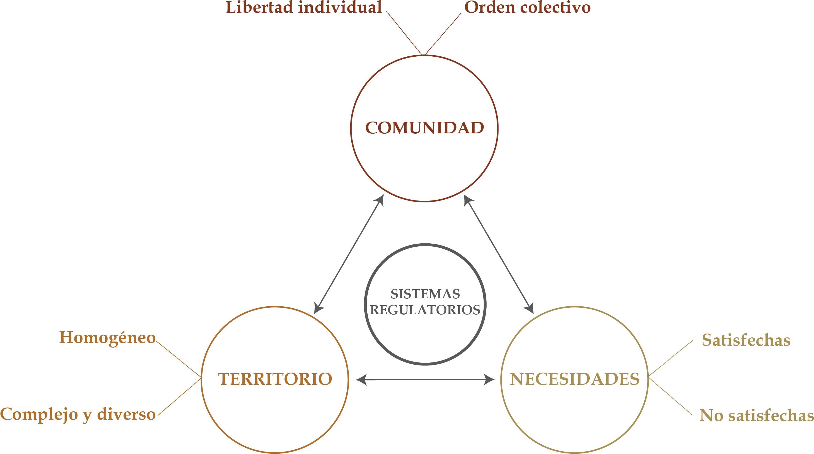

Unidad 1.2 El Estado, una organización especialmente compleja
Hoy, casi todas las personas tienen alguna idea, aunque sea imprecisa, de qué es el Estado, qué representa y qué pueden esperar de él. Como seres sociales, nuestras acciones, incluso las más privadas, están directa o indirectamente sujetas a regulaciones, controles o a la presencia del Estado 1. Las características principales del Estado que se analizan en esta sección son: el contrato social, sus componentes y la soberanía y el poder público.
1.1. El contrato social
La necesidad de vivir en sociedad y la persistencia de intereses egoístas más allá del ámbito individual hicieron necesaria, desde épocas remotas, la coerción como instrumento de orden y paz. Así surgió el Estado moderno como titular de la fuerza social y fundamento material de la autoridad de los gobiernos sobre los ciudadanos2 .
Para el filósofo inglés Thomas Hobbes (1588-1653) el ser humano supera el estado de naturaleza mediante un pacto por el cual sus participantes se transfieren ciertos derechos y renuncian a otros. A finales del siglo XVII, John Locke (1632-1704) sostuvo que el Estado surgía del consenso o pacto social y tenía como finalidad proteger los derechos individuales3 . Años después, Juan Jacobo Rousseau (1712-1778) lo denominó contrato social.
Mediante ese pacto, las personas delegan en las instituciones y en sus representantes el gobierno de la nación. Ese pacto 4 expresa el consentimiento colectivo de ser gobernados por las personas escogidas para ello. La aceptación voluntaria de individuos racionales y libres constituye la base de la tradición liberal, que justifica la existencia del Estado y de la ley. Para hacer posible el Estado, cada persona cede parte de sus derechos a una entidad superior que garantiza su supervivencia. Por ello, la intervención estatal forma parte de su naturaleza.
1.2. Los componentes del Estado
El Estado, que es una poderosa organización humana se asienta en un territorio determinado en procura de satisfacer las necesidades colectivas y promover el desarrollo de sus habitantes mediante un ordenamiento justo y la regulación de la convivencia. Para cumplir estas funciones, ejerce una autoridad obligatoria para los ciudadanos y posee capacidad de autodeterminación y autorregulación.
Debido a su complejidad, no existe una definición única de Estado. En sentido amplio, puede entenderse como una comunidad o conglomerado social que se somete voluntariamente a una autoridad ejercida por órganos propios; se asienta en un territorio determinado; busca satisfacer sus necesidades y garantizar el bienestar y la dignidad humana; y cuenta con una soberanía reconocida por otros Estados 5.
La interacción permanente entre los tres componentes básicos del Estado: comunidad, territorio y bienestar, va transformando permanentemente cada uno de ellos. Esto, a menudo, genera conflictos, aunque otras veces se da de manera más armónica, buscando el mejoramiento progresivo de la calidad de vida de los habitantes, pero sacrificando parte de los recursos naturales y el medio ambiente.
Imagen 7. Componentes del Estado explicados a partir de sus polaridades

Fuente: Elaboración Sociedad de Mejoras y Ornato de BogotáLa existencia de un Estado supone necesariamente como elemento previo una población, esto es una comunidad, que está en la base misma de la organización estatal, constituye su sustrato. La comunidad está compuesta por un conjunto de personas, que cumplen un ciclo vital determinado, durante el cual persiguen a la vez fines individuales y colectivos. Así la comunidad puede ser considerada a la vez como elemento humano y como elemento sociológico que resulta de la voluntad de ese conglomerado de convivir y buscar la realización de sus fines colectivos e individuales 6 . La humanidad se ha debatido en lo polaridad entre la libertad individual y el orden colectivo.
Para el constitucionalista Vladimiro Naranjo Mesa existe unanimidad en considerar que el territorio es uno de los elementos esenciales del Estado, sin el cual éste no puede existir. No significa ello que el Estado requiera de un territorio fijo cuyos límites sean definitivos 7. A diferencia de territorios como el norteamericano caracterizado por ser homogéneo, el colombiano, producto de su abrupta geografía, conforma un territorio altamente complejo y diverso, conformando regiones que por años han vivido prácticamente aisladas.
El propósito fundamental de toda agrupación humana debe ser el de alcanzar la dignidad y el bienestar de todos los hombres y por ende el respeto que se ha de profesar necesariamente a cualquier otro hombre. Así lo reconoce el artículo 366 de la Constitución de 1991 cuando preceptúa que “El bienestar general y el mejoramiento de la calidad de vida de la población son finalidades sociales del Estado”.
De otra parte, la Declaración Universal de los Derechos del Hombre, que en su artículo primero afirma: “Todos los hombres nacen libres e iguales en dignidad y derechos y dotados como están por naturaleza de la razón y la conciencia deben comportarse fraternalmente los unos con los otros”8 . Resulta evidente que la satisfacción de las necesidades, aspiraciones e intereses colectivos de una vida digna para todos los ciudadanos, así como la búsqueda del bienestar, son fines esenciales del Estado.
1.3. La soberanía
La doctrina clásica de la soberanía sostiene que en toda sociedad existe un poder supremo, absoluto e independiente, encargado de adoptar y promulgar las normas jurídicas. El pacto o contrato social se considera el origen del Estado y el fundamento de la soberanía popular. Mediante él, las personas crean y organizan el Estado, lo facultan para gobernarlas y subordinan una parte de su autonomía a las autoridades encargadas de dirigirlo.
Así, le otorgan legitimidad y un poder supremo de mando, en el que radica la soberanía. El soberano no está sometido a una autoridad superior y puede ejercer de manera ilimitada la coacción sobre quienes están sujetos a su poder 9. Desde esta perspectiva, la soberanía define al propio Estado: solo este puede ser soberano. Por ello, la soberanía se considera un valor esencial para la vida social y para la existencia del Estado 10.
Para el filósofo francés Jean Bodin (1530-1593), los atributos de la soberanía consisten en dictar y derogar la ley, así como interpretarla y modificarla sin el consentimiento de una autoridad superior, igual o inferior11 .
Decir que el Estado es soberano es decir que los otros grupos como las familias, los municipios, las provincias, las asociaciones, los sindicatos están subordinados y que él no está subordinado a ningún otro superior 12. Grosso modo los principales atributos de la soberanía son:
1. El poder de expedir las leyes.
2. El poder de declarar y hacer la guerra o negociar la paz.
3. El de nombrar a los más altos funcionarios.
4. El de ser la última instancia.
5. El poder de conceder gracias a los condenados por encima de las sentencias o contra el rigor de las leyes.
6. El derecho a la obediencia y fidelidad de los ciudadanos.
7. El de poder imprimir o acuñar moneda.
8. El derecho de imposición de gravámenes y tributos.
Naturalmente la soberanía de un Estado requiere el apalancamiento de una fuerza que sirva de instrumento de coacción, capaz de hacerla valer y ejercerla dentro de sus fronteras y defenderla fuera de ellas.
El Estado es titular de un poder autónomo, independiente y para cumplir su papel necesita órganos investidos de autoridad que le confiere el pueblo titular de la democracia en los términos de un Estatuto fundamental denominado Constitución. En ella se consagran los valores que esa sociedad profesa y los postulados que buscan realizar, así como las normas básicas del sistema al que se acoge 13.
Aunque la soberanía popular pueda parecer una construcción teórica, lejana al ciudadano común, la Constitución establece claramente que reside exclusivamente en el pueblo, de quien emana todo el poder público. Esto otorga a los ciudadanos poderes fundamentales: mandar, prohibir, permitir, controlar, participar, juzgar y sancionar son formas de ejercicio público que son potestad propia y exclusiva del pueblo.
Con la Constitución Política de 1991 se pasó de la soberanía nacional a la soberanía popular al establecerse categóricamente en el artículo 3º que a la letra dice: “La soberanía reside exclusivamente en el pueblo, del cual emana el poder público. El pueblo la ejerce en forma directa o por medio de sus representantes, en los términos que la Constitución establece”. La soberanía popular y la separación de los poderes son los pilares fundamentales de nuestro sistema político. La participación del pueblo está reglada por la Constitución que todos debemos acatar y que los funcionarios públicos al posesionarse juran cumplir.
1.4. El poder
Hablar de soberanía es hablar de poder político 14. Se ha definido el Estado como un conglomerado social, política y jurídicamente constituido, asentado sobre un territorio determinado, sometido a una autoridad que se ejerce a través de sus propios órganos. Aparece así el elemento formal del Estado: el poder político 15 .
Poder es la capacidad de un individuo o grupo de llevar a la práctica su voluntad incluso a pesar de la resistencia de otros individuos o de otros grupos. En otros términos, el poder es la facultad o la capacidad que tiene una persona o un grupo para dirigir, influir o lograr que otros actúen de determinada manera. Se manifiesta principalmente mediante la autoridad, el dominio y la influencia social.
En todo grupo humano, desde el más pequeño al más grande, existen los que mandan y los que obedecen, los que dan órdenes y los que las acatan, los que toman las decisiones y los que las aplican; los primeros son los “gobernantes” y los segundos los “gobernados”16 .
El poder es un concepto fundamental para comprender la organización política, económica y social. El politólogo español Josep M. Vallès lo estudia desde dos perspectivas: como un recurso del que se dispone y como el resultado de una relación.
Entendido como resultado de una relación, el poder depende de la posición que una persona ocupa frente a los demás y de las ventajas que esa posición le proporciona. En este caso, las preguntas son: ¿Cuál es su posición?, ¿Cómo la obtuvo? y ¿por qué los demás aceptan sus decisiones?17 .
Independientemente de la perspectiva desde la cual se analice, el poder está presente en todas las organizaciones sociales y suele ser ejercido por una persona o un grupo. Algunos ejemplos son los padres en una familia, los dirigentes de un sindicato, el presidente de una asociación, el alcalde de un municipio o el pontífice de la Iglesia católica.
Vallès define el poder político como la capacidad de intervenir en las decisiones públicas. Esto permite que una persona o un grupo participe en la aprobación o el rechazo de decisiones que afectan a la comunidad. Por tanto, el poder político se relaciona con el ejercicio de los derechos políticos y con la posibilidad de influir en las decisiones colectivas. A lo largo de la historia de la humanidad el concepto de propiedad ha sido, de una o de otra manera, un factor determinante de poder y por lo tanto de disputas, confrontaciones y guerras.
Sección 1.2.2 Evolución del Estado Sección 1.2.3 Independencia de la Nueva Granada Sección 1.3.2 La organización del territorio colombiano Sección 1.3.3 El derecho de propiedad Sección 2.2.1 Antecedentes del gobierno de la ciudad Sección 2.2.2 El estatuto orgánico de Bogotá D.C. Sección 2.2.3 Descentralización territorial Sección 2.3.1 Sectores de la administración
Footnotes
-
Vladimiro Naranjo Mesa Teoría constitucional e instituciones políticas (Bogotá: Editorial Temis S. A. Décima edición, 2006), 81. ↩
-
Alfonso López Michelsen. El Estado fuerte (Bogotá: Tirant humanidades, 2024), 127-128. ↩
-
Juan Carlos Esguerra Portocarrero. Los cimientos de la Constitución (Bogotá: Tirant lo Blanch, 2023), 163. ↩
-
No obstante, algunos autores sostienen que el contrato o pacto social, aunque es una construcción filosófica valiosa, carece de una base práctica en la política. ↩
-
Juan Carlos Esguerra Portocarrero. Los cimientos de la Constitución (Bogotá: Tirant lo Blanch, 2023), 97. ↩
-
Vladimiro Naranjo Mesa. Teoría constitucional e instituciones políticas (Bogotá: Editorial Temis S. A. Décima edición, 2006), 99. ↩
-
Ibid., 116. ↩
-
Artículo 1º de la Declaración Universal de los Derechos del Hombre de 1948. ↩
-
Ibid., 235 ↩
-
Maurice Duverger. Instituciones políticas y derecho constitucional (Bogotá: Ediciones Ariel, quinta edición, 1970), 53. ↩
-
Juan Carlos Esguerra. Los cimientos de la Constitución (Bogotá: Tirant lo Blanch, 2023), 29. ↩
-
Maurice Duverger. Instituciones políticas y derecho constitucional (Bogotá: Ediciones Ariel, quinta edición, 1970), 53. ↩
-
“Los fines del Estado”, El Tiempo, José Gregorio Hernández, 6 de diciembre. Disponible en: “Los fines del Estado”. ↩
-
Juan Carlos Esguerra Portocarrero Los cimientos de la constitución (Tirant lo blanch 2023), p 49. ↩
-
Vladimiro Naranjo Mesa. Teoría Constitucional e instituciones políticas (Bogotá: Editorial Temis, 2006), 129. ↩
-
Maurice Duverger. Instituciones políticas y derecho constitucional (Bogotá: Ediciones Ariel, 1970),25. ↩
-
Josep M. Vallès. Ciencia Política. Una introducción. Capítulo 2: ¿Qué es poder político? (Barcelona: Editorial Ariel, 2007), 31-34. ↩